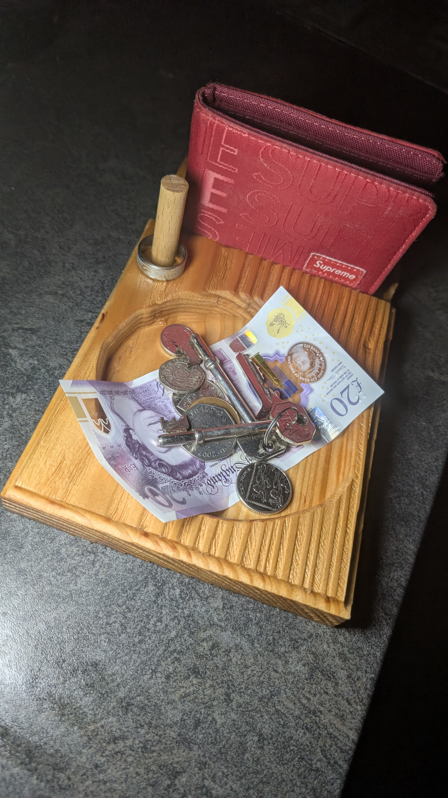

Herringbone Coffee Table
A handcrafted statement piece featuring a distinctive herringbone design, built to combine practicality with bold visual appeal.
Showcasing handcrafted furniture, home décor and functional pieces designed and built by Mason Hughes in North Wales.
A handcrafted statement piece featuring a distinctive herringbone design, built to combine practicality with bold visual appeal.

A handcrafted wooden lamp designed to create a warm and inviting atmosphere while showcasing the natural beauty of timber.

One of Hughes Woodworks' most recognisable creations, combining modern geometric design with traditional craftsmanship.

Designed for modern living, this handcrafted sofa arm tray keeps everyday essentials organised and within easy reach.

A handcrafted organiser designed for keys, wallets, watches and everyday carry items.